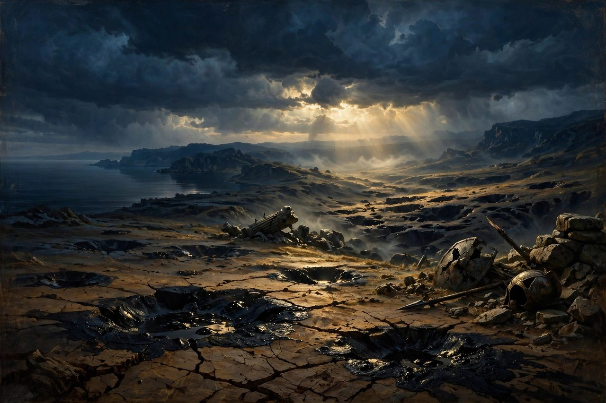
If the mountains are where God reveals who He is, the valleys are where He proves He stays. Down in the low places of Scripture you will find wars and weeping, sin and burial grounds — and right in the middle of all of it, a God who comes down, who walks with His people through the deep places, and who has a way of turning ground marked by trouble into ground marked by hope. Israel's enemies once said, "The LORD is a god of the hills but he is not a god of the valleys" (1 Kings 20:28) — and God answered them in a valley. These are the valleys of the Old Testament, in rough order through the story, and every one of them has something to say about the God who is just as present at the bottom as He is at the top.
The Valley of Siddim
Scripture: Genesis 14:3, 8–17 The story: In the Valley of Siddim, near the Dead Sea, the kings of Sodom and Gomorrah and their allies went to war against four eastern kings — and lost badly. The valley was full of bitumen pits, and Sodom's kings fled and fell into them; Abram's nephew Lot was carried off with all his goods. When Abram heard, he took 318 men, pursued the enemy as far as Dan, and rescued Lot and everyone with him. On the way home, in the King's Valley, Abram was met by Melchizedek, king of Salem and priest of God Most High, who brought out bread and wine and blessed him. The meaning: God is not distant from the messes His people get tangled in — He raised up a rescuer for a nephew who had wandered too close to Sodom. And in the middle of a war story, He slips in a quiet preview: a priest-king with bread and wine, blessing Abram before Abram ever asked. What it points to: Melchizedek points forward to Christ, the greater Priest-King who blesses God's people with bread and wine and who rescues captives not with 318 men but with His own blood. Siddim itself — a valley of pits and defeat next to Sodom — warns that the road toward Sodom always ends in a pit, and that rescue has to come from outside.
The Valley of Eshcol
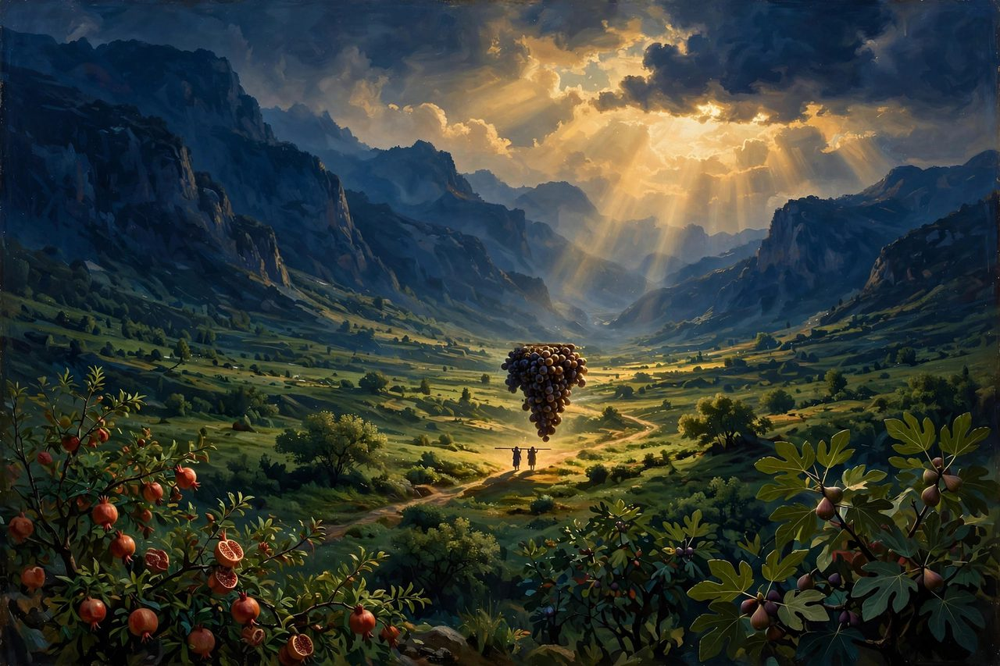
Scripture: Numbers 13:23–24; Deuteronomy 1:24 The story: Moses sent twelve spies into the Promised Land, and in the Valley of Eshcol they cut down a single cluster of grapes so large it had to be carried on a pole between two men — along with pomegranates and figs. The valley took its very name from that cluster: Eshcol means "cluster." The spies brought the fruit back as proof of the land's goodness, even as ten of them spread a report of fear about the giants who lived there. The meaning: God gives His people real tastes of His goodness — fruit you can hold in your hands — even before they enter the fullness of the promise. The cluster was not imagination or wishful thinking; it was evidence. What it points to: The cluster of Eshcol is a firstfruits picture — a small, real foretaste of a much larger harvest, the way the Holy Spirit is given to believers now as a guarantee of the glory still to come. And the valley carries the human condition too: the same generation that carried the fruit still let fear talk them out of the promise. Seeing God's goodness and trusting Him for it are two different things.The Valley of Sorek
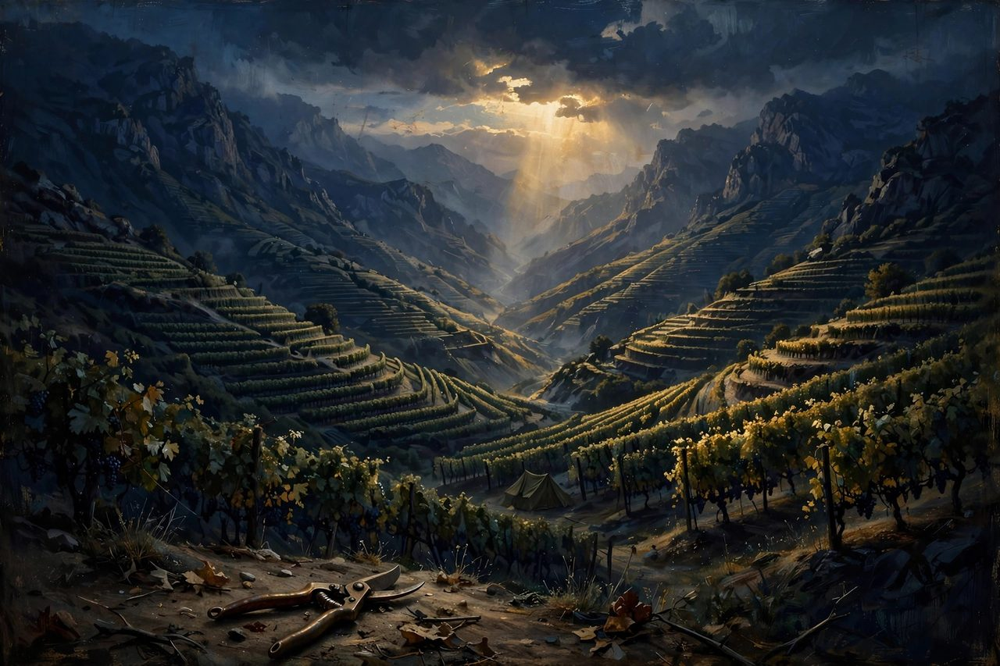
Scripture: Judges 16:4–21 The story: Samson, the strongest man in Israel, fell in love with Delilah in the Valley of Sorek — a valley known for its choice vines, its very name tied to the grapevine. There, bribed by the lords of the Philistines, she pressed him day after day until he told her the secret of his strength. He woke with his hair shaved, his strength gone, and the LORD departed from him; the Philistines seized him, gouged out his eyes, and bound him in a bronze mill. The meaning: The valley of Sorek teaches that a man's greatest danger is rarely the enemy in front of him — it is the compromise he keeps returning to. Samson's strength was never really in his hair; it was in his consecration to God, and he traded it away a little at a time, in a pleasant valley, to someone who never loved him. What it points to: Sorek is the human condition in miniature: strong people undone not by force but by flattery, appetite, and one small surrender too many. Yet even here grace is not finished — Samson's hair began to grow back in the prison house (Judg 16:22), pointing to a God whose mercy reaches even the man who threw everything away.The Valley of Elah
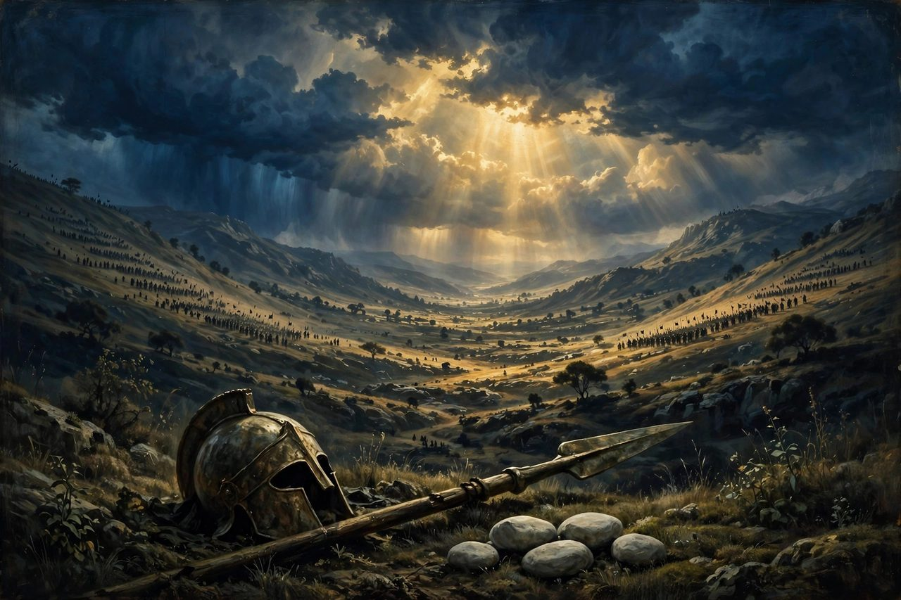
Scripture: 1 Samuel 17 The story: In the Valley of Elah, the Philistine giant Goliath stood for forty days, morning and evening, taunting the armies of Israel — and the whole army, Saul included, stood on the hillside afraid. A shepherd boy named David came down into the valley with a sling, five smooth stones, and a declaration: "The battle is the LORD's, and he will give you into our hand" (1 Sam 17:47). One stone, and the giant fell on his face. The meaning: God delights to win His battles with the people nobody would have picked, using the tools nobody would have chosen. The valley teaches that the size of the threat is never the measure of the outcome — the covenant is. What it points to: David in Elah points straight to his greater Son: one champion goes down into the valley on behalf of a frightened people who cannot save themselves, and wins a victory they only have to step into and enjoy. It is the shape of the gospel — substitution, courage by proxy, and plunder shared with the trembling.The Valley of the Giants (Valley of Rephaim)
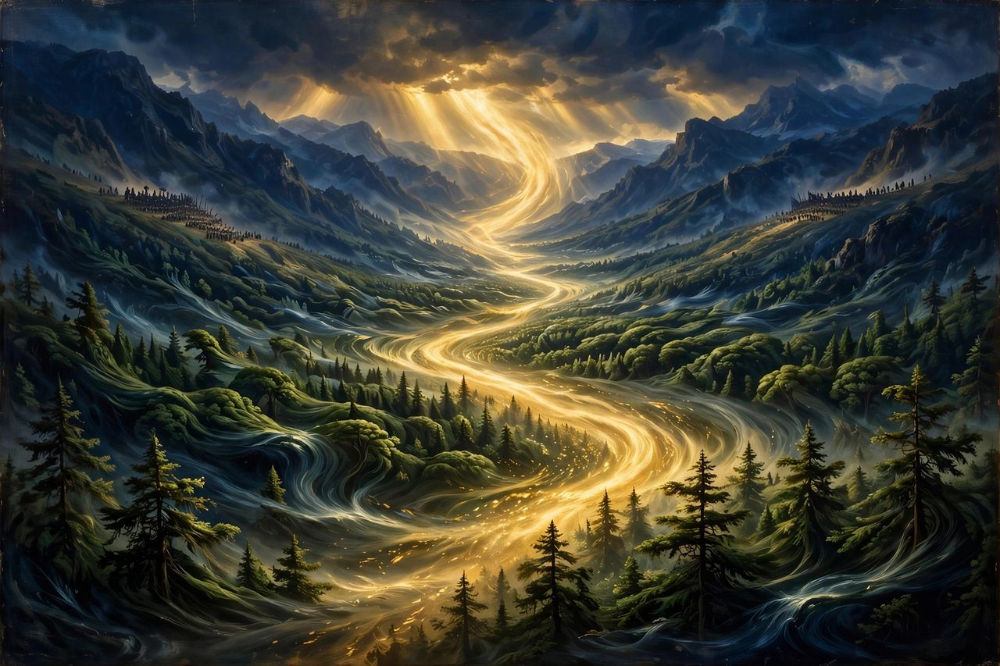
Scripture: 2 Samuel 5:17–25; 23:13; Isaiah 17:5 The story: Twice the Philistines spread out in the Valley of Rephaim — the Valley of the Giants — to attack David after he was anointed king. Both times David did the same thing before he did anything else: he inquired of the LORD. The first time God said, "Go up." The second time God said, "Do not go up" — instead, circle behind them and wait for "the sound of marching in the tops of the balsam trees," the sign that the LORD Himself had gone out before him. David obeyed both answers, and won both battles. The meaning: Yesterday's word from God is not a substitute for today's. David refused to fight on autopilot; he asked again, and God answered differently — and the difference was the victory. The valley also teaches that sometimes the sound you are waiting for is the sound of God already moving ahead of you. What it points to: Rephaim points to every believer's recurring battles — the enemy loves to return to the same low ground where he pressed you before. It points to a King who does not merely bless His people's efforts but goes before them, and to the discipline of prayer that asks, every time, "Lord, what now?" instead of assuming.The Valley of Aijalon
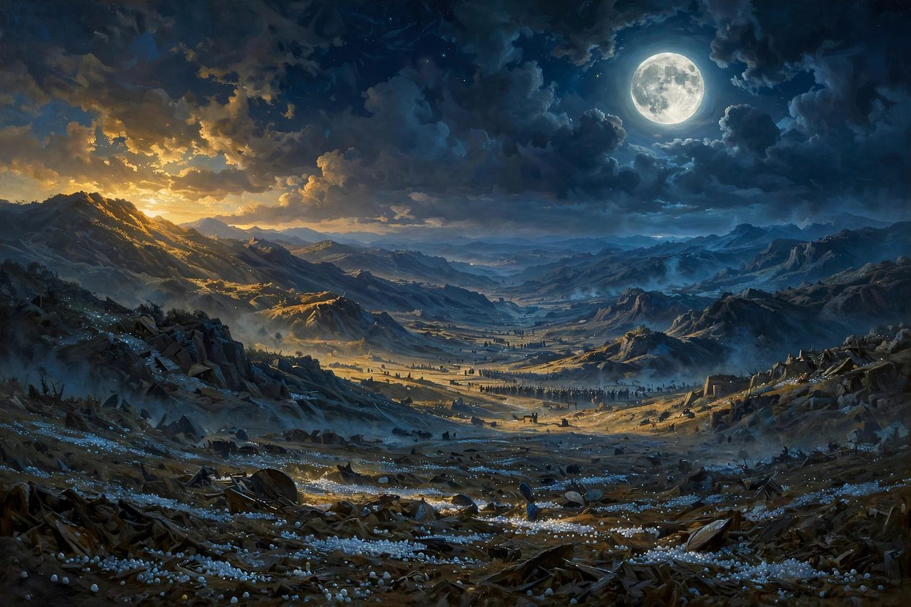
Scripture: Joshua 10:12–14 The story: After the Gibeonites called for help, Joshua marched all night and fell on the Amorite kings at Gibeon, and God threw the enemy into confusion and rained hailstones on them. Then, with daylight running out, Joshua spoke to the LORD in the sight of all Israel: "Sun, stand still at Gibeon, and moon, in the Valley of Aijalon." And the sun stood still in the midst of heaven for about a whole day — "there has been no day like it before or since" (Josh 10:14). The meaning: God is Lord of time itself, and He is not stingy with it when His people are finishing the work He gave them. Joshua needed light to complete the victory, and the God who made the sun stopped it in the sky over the Valley of Aijalon. What it points to: Aijalon points to the day when there will be no more race against darkness at all — the city of God that "has no need of sun or moon to shine on it, for the glory of God gives it light" (Rev 21:23). And it speaks comfort to every believer who has ever prayed, "Lord, I'm running out of time": the One who holds the sun holds your hours too.The Valley of Jezreel
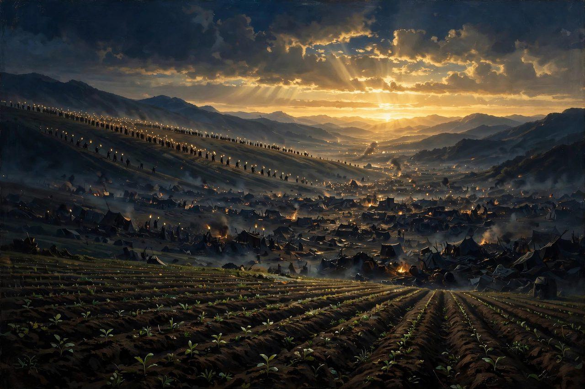
Scripture: Judges 6:33; 7:1–8; Hosea 1:4–5; 2:22–23 The story: The broad Valley of Jezreel was Israel's great battlefield. There the Midianites camped "like locusts in abundance," and there God whittled Gideon's army of 32,000 down to 300 men — so that Israel could never say, "My own hand has saved me." With trumpets, jars, and torches, the 300 routed an army that could not be counted. Centuries later the prophet Hosea had to name his own son Jezreel as a sign of judgment: in that same valley God would break the bow of Israel for the blood shed there. Yet the same name carries the promise: Jezreel means "God sows," and God swore that one day He would sow His people in the land in mercy. The meaning: Jezreel is a valley of two words over the same ground: judgment for bloodshed and pride, and sowing for mercy and harvest. God would not let the place of Israel's sin have the last word — He took the very name of the wound and made it a seed. What it points to: Jezreel points to the way God works in every human life: the field where you were broken is the field He intends to plant. Gideon's 300 point forward as well — to a God who saves by weakness on purpose, through a deliverer so unimpressive in numbers that all the glory has to be His.The Valley of Salt
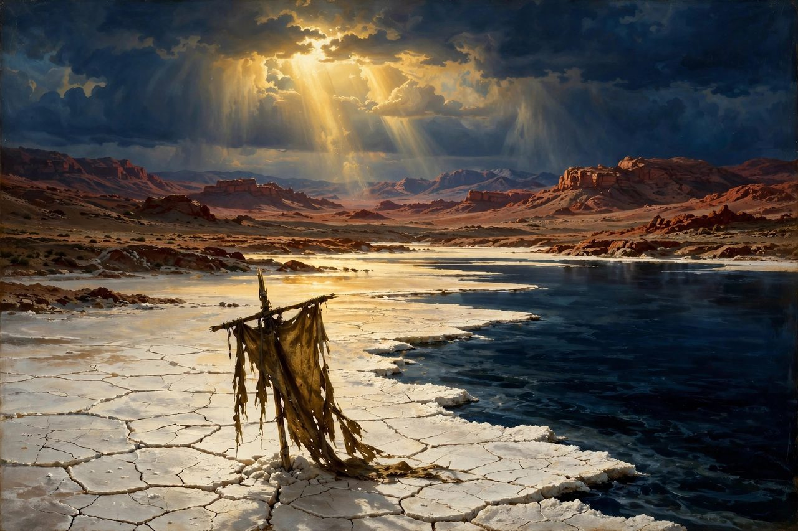
Scripture: 2 Samuel 8:13; 2 Kings 14:7; 2 Chronicles 25:11; Psalm 60 (title) The story: In the Valley of Salt, near the Dead Sea, David's forces struck down 18,000 Edomites and established his fame — the victory Psalm 60's title remembers. Generations later, King Amaziah of Judah mustered his courage, marched into the same valley, and defeated 10,000 men of Edom there too. Twice over, this salt-white wilderness valley became the place where God gave His people victory over Edom, the nation descended from Esau. The meaning: The Valley of Salt teaches that God's faithfulness outlasts generations — the same God who fought for David fought for his descendants on the same ground. The valley itself, in the barren salt flats by the sea of judgment, was no one's idea of a promised inheritance, and God met His people there anyway. What it points to: It carries a sober warning alongside the comfort: Amaziah won in the Valley of Salt and then carried Edom's idols home and bowed to them (2 Chr 25:14) — victory in the valley, foolishness on the throne. It points to the human pattern of trusting God in the battle and forgetting Him in the palace.The Valley of Ben-hinnom (Hinnom / Gehenna)
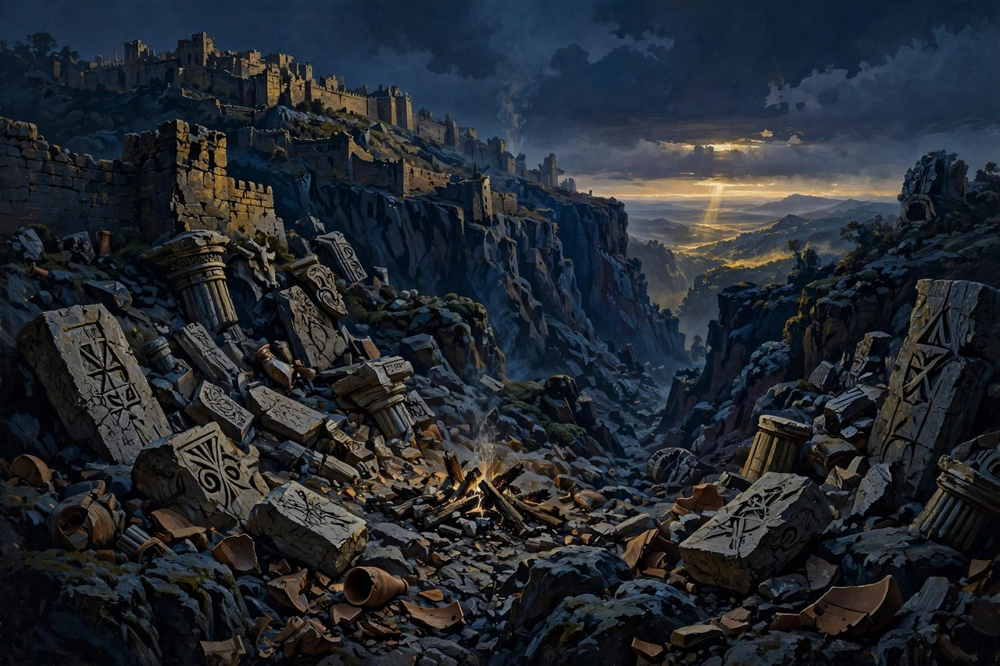
Scripture: Joshua 15:8; 18:16; 2 Kings 23:10; 2 Chronicles 28:3; 33:6; Jeremiah 7:31–32; 19:1–13 The story: The Valley of the Son of Hinnom ran along the south side of Jerusalem, and it became the darkest ground in Israel. There, in the place called Topheth, kings like Ahaz and Manasseh burned their own sons and daughters as offerings to Molech — the very abomination God had forbidden. Jeremiah stood in that valley with a clay flask, smashed it before the elders, and announced God's verdict: the valley would be renamed the Valley of Slaughter, because the place of Israel's worst sin would become the place of its judgment. The meaning: Hinnom shows what human religion becomes when it is cut loose from the voice of God: it eventually demands the children. God hates what was done in that valley, and His judgment on it was not indifference — it was the grief of a Father over sacrifices He never asked for and never wanted. What it points to: This is the valley whose name Jesus took up: Gehenna — the Greek form of Ge-Hinnom, "Valley of Hinnom" — His word picture for hell (Matt 5:22; Mark 9:43–48). Every time Jesus warned of Gehenna, His hearers could picture that cursed ravine outside the city wall. It points to the terrifying truth that hell is real, and to the mercy that the same Jesus who named it went to a cross outside that same city to keep people out of it.The Kidron Valley
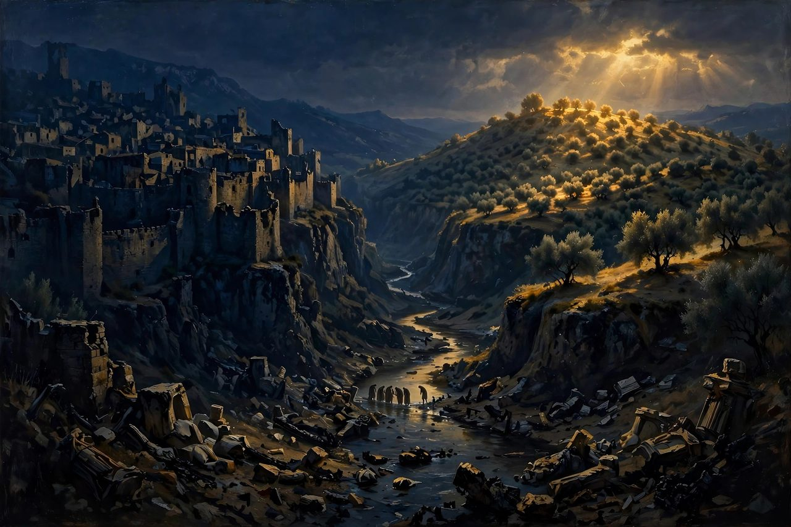
Scripture: 2 Samuel 15:23, 30; 1 Kings 15:13; 2 Chronicles 29:16; 30:14; Jeremiah 31:40 The story: The Kidron is the deep ravine between Jerusalem and the Mount of Olives, and David crossed its brook weeping, barefoot, head covered, fleeing from his own son Absalom — "all the land wept aloud as all the people passed by" (2 Sam 15:23). In later generations the Kidron became the place where Israel's kings dumped and burned the idols they tore down: Asa burned his mother's idol there, and Hezekiah's priests carried all the uncleanness out of the temple and threw it into the Kidron. The meaning: The Kidron is a valley of tears and of cleansing — the ground where a broken king wept over his rebellion-torn family, and the dumping ground where false gods were finally treated like the trash they were. God records both scenes without embarrassment: grief over sin, and ruthlessness against idols, belong in the same valley. What it points to: David crossing the Kidron weeping points his descendants' story forward — a thousand years later, his greater Son would cross the same brook on the night He was betrayed, on His way to a garden and a cross (John 18:1); that moment is taken up in the New Testament section of this teaching. Here in the Old Testament, the Kidron already whispers it: the true King enters His suffering through this valley. Jeremiah even folds the whole valley into the future holy city — one day the Kidron itself will be "sacred to the LORD" (Jer 31:40).The Valley of Beracah
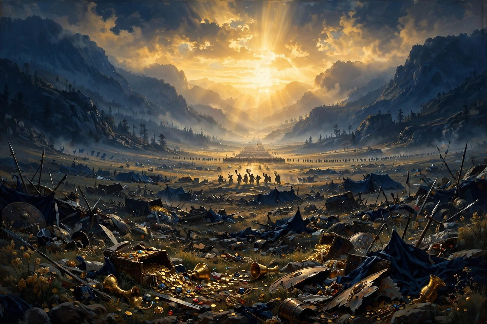
Scripture: 2 Chronicles 20:1–30 The story: A vast coalition army came against Judah, and King Jehoshaphat, outnumbered and afraid, prayed the prayer of a man with no plan: "We do not know what to do, but our eyes are on you" (2 Chr 20:12). God's answer was, "You will not need to fight in this battle" — and Judah marched out with the singers in front of the army, singing, "Give thanks to the LORD, for his steadfast love endures forever." God threw the enemy armies into confusion against each other, and Judah arrived to find only corpses and plunder — three days of gathering spoil. They named that valley Beracah, which means "Blessing," because there they blessed the LORD. The meaning: Beracah is what a battlefield gets called when praise goes first. Jehoshaphat's valley teaches that worship is not what God's people do after God wins — sometimes it is the very means by which He wins, and the defeat of the enemy begins with a choir instead of a charge. What it points to: Beracah points to the human race's deepest instinct and its correction: we name places after our wounds, but Judah named this one after God's goodness. It points forward to a church that blesses the LORD in the valley — and to every believer who has ever renamed a terrible place in their own story by what God did there.The Valley of Achor
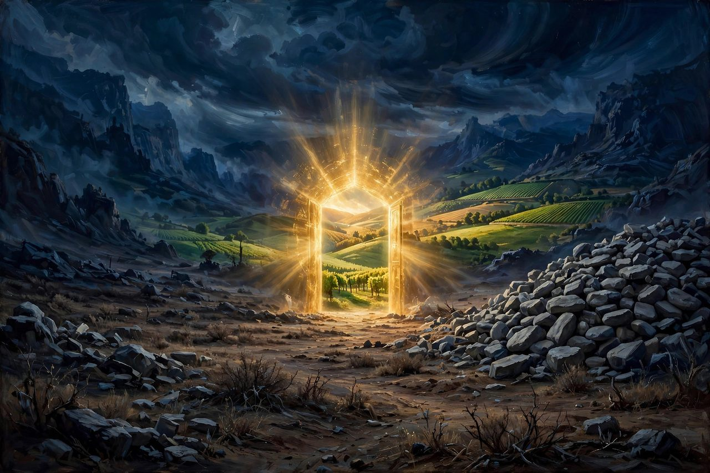
Scripture: Joshua 7; Hosea 2:15; Isaiah 65:10 The story: After the victory at Jericho, Israel was routed at little Ai — because Achan had taken devoted things from Jericho and buried them in his tent. When the sin was uncovered, Achan and his household were taken to a valley and stoned, and a great heap of stones was raised over him. The place was named the Valley of Achor — Achor means "trouble" — "to this day." Centuries later, Hosea delivered one of the most tender sentences in all of Scripture: God said of His wayward people, "I will give her the Valley of Achor as a door of hope." The meaning: God does not waste a valley of trouble. Achor teaches that the place where sin was judged and buried can become, by nothing but grace, the doorway where hope walks in. He names the very worst address in your story and calls it a door. What it points to: Achor is the gospel in geography: the valley of judgment transformed into the doorway of restoration for an unfaithful bride whom God refuses to give up (Hos 2). It points to every human life where the worst chapter — the addiction, the failure, the ruin — becomes, in Christ, the exact place where hope first gets through.The Valley of Baca
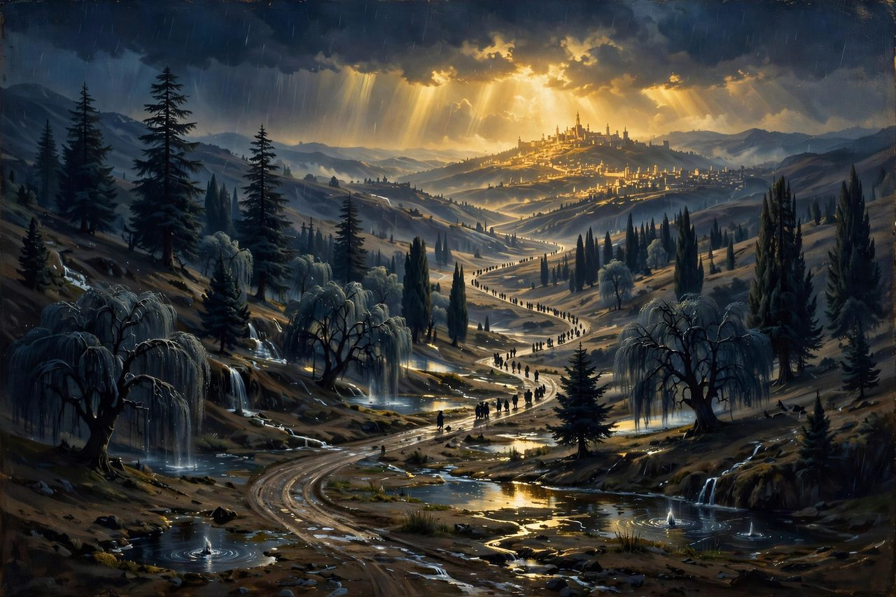
Scripture: Psalm 84:5–7 The story: Psalm 84 is a pilgrim song — the song of God's people on the road up to Jerusalem for the feasts. On the way, they pass through the Valley of Baca, a name tied to weeping (and possibly to balsam trees that "weep" in dry ground). But the pilgrims do not merely survive it: "As they go through the Valley of Baca they make it a place of springs; the early rain also covers it with pools." And then the song lands its promise: "They go from strength to strength; each one appears before God in Zion." The meaning: Baca teaches that the road to the house of God runs through the valley of weeping, not around it — and that people who keep walking in dependence on God change the valley as they pass. Their tears, mixed with God's rain, leave water behind. What it points to: Baca is the picture of the believer's testimony: the weeping valley you crossed can become a well for the next hurting person on the same road. It points forward to the day when pilgrimage ends and appearing before God is no longer a journey through tears but a homecoming.The Valley of the Shadow of Death
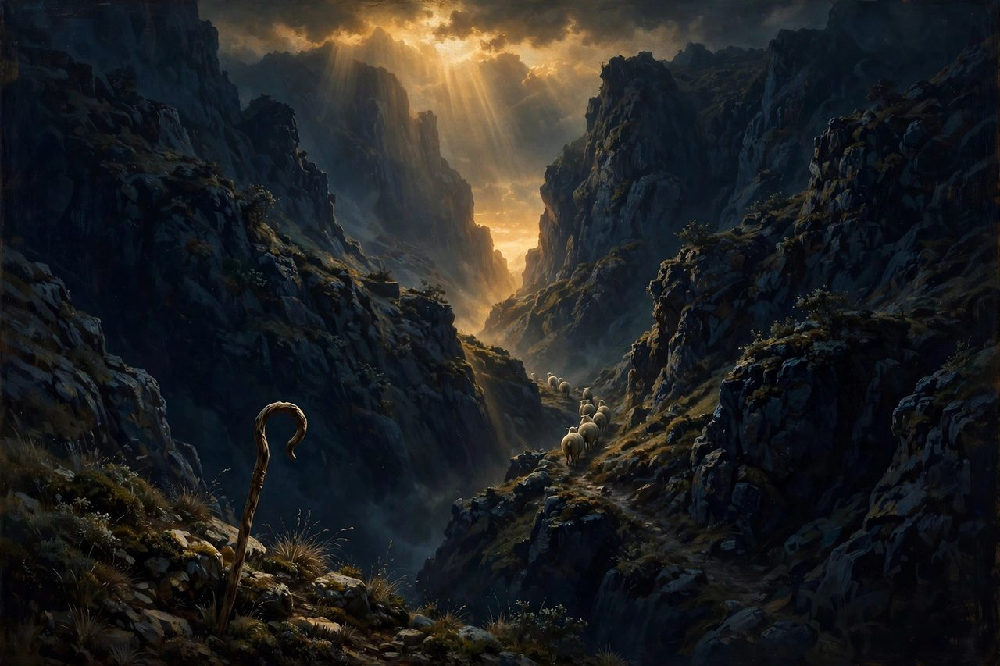
Scripture: Psalm 23:4 The story: David's shepherd psalm moves from green pastures and still waters into darker country: "Even though I walk through the valley of the shadow of death, I will fear no evil, for you are with me; your rod and your staff, they comfort me." The Hebrew word, tsalmavet, means deep darkness — the shadow of death itself — the kind of steep, shadowed ravine where a flock could neither see ahead nor turn back. Notably, the psalm changes its grammar here: before this verse David talks about the Shepherd; in the valley, he talks to Him — "for you are with me." The meaning: The valley of the shadow teaches that God's promise to His people was never exemption from dark valleys — it is companionship in them. The rod beats back what would devour the sheep; the staff pulls the sheep back from the edge. Both are comfort, because both mean the Shepherd is close. What it points to: This valley points to the human race's one universal appointment: everyone walks a darkest valley, and finally the valley of death itself. It points to the Shepherd who did not merely describe that valley but entered it, died, and came out the other side — so that for His sheep, what waits in the valley is now only a shadow, and shadows cannot hurt you when the One who casts it is the Light.The Valley of Vision
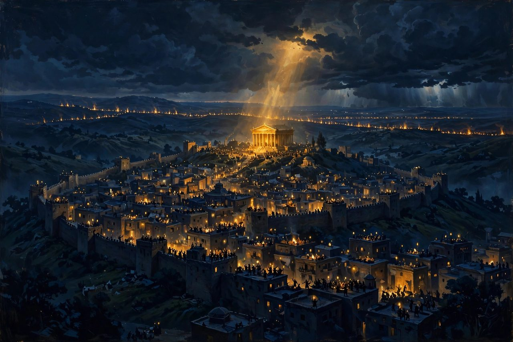
Scripture: Isaiah 22:1–14 The story: Isaiah's strangest valley is not a ravine in the wilderness — it is Jerusalem herself, called "the valley of vision," the city set among hills where God had given His prophets their visions. But when judgment came to her door, the city of vision did not repent; it partied. "Let us eat and drink, for tomorrow we die!" the people cried (Isa 22:13), feasting on the rooftops while the enemy massed — and God said of that generation's sin, "Surely this iniquity will not be atoned for you until you die." The meaning: The Valley of Vision warns that seeing clearly is no substitute for bowing humbly. Jerusalem had the prophets, the temple, and the visions — and used them as decoration while it partied through its own funeral. A valley can be a place of revelation and still become a place of ruin if the revelation never reaches the heart. What it points to: It points to every generation — and every church — tempted to celebrate its heritage while ignoring its God, and to the Lord Jesus weeping over this same city centuries later: "Would that you... had known on this day the things that make for peace!" (Luke 19:42). Light refused becomes judgment doubled.The Valley of Dry Bones
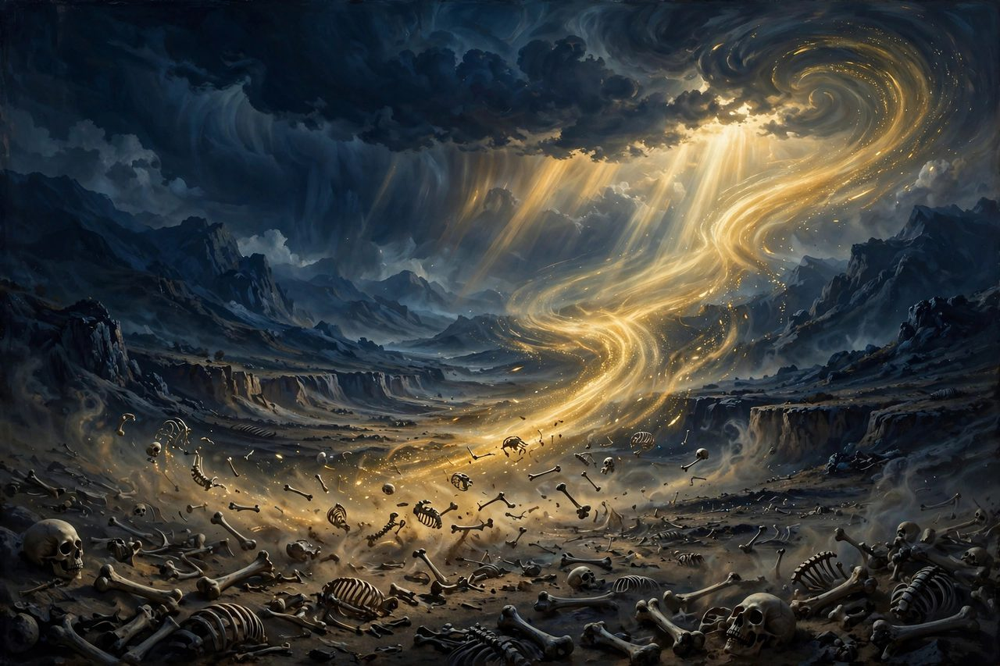
Scripture: Ezekiel 37:1–14 The story: The hand of the LORD carried Ezekiel out and set him down "in the middle of the valley; it was full of bones" — bones that were "very many" and "very dry," the remains of a slaughtered army, long past any human hope. God asked the question the whole chapter hangs on: "Son of man, can these bones live?" Ezekiel answered, "O Lord GOD, you know." Then, at God's word, the prophet preached to the bones: bone came to bone, sinews and flesh and skin covered them — but there was no breath in them. Only when he prophesied to the breath, and the Spirit came, did they live and stand on their feet, "an exceedingly great army." God named them Himself: "These bones are the whole house of Israel." The meaning: This valley teaches that God is not finished with anything that is dead — not a nation, not a family, not a person who says, "Our hope is lost." Resurrection is not resuscitation of the strong; it is God's breath in what everyone else has already buried, and it begins with His word spoken over the bones. What it points to: Dry Bones is the great resurrection valley, pointing forward to the empty tomb — to a God who raises the dead as His signature act — and forward still to the day the graves open at the voice of the Son of God (John 5:28–29). For the human race, it answers the addict, the prodigal, and the written-off: your dryness is not God's verdict on you. His question still stands over every hopeless place: "Can these bones live?"The Valley of Hamon-gog
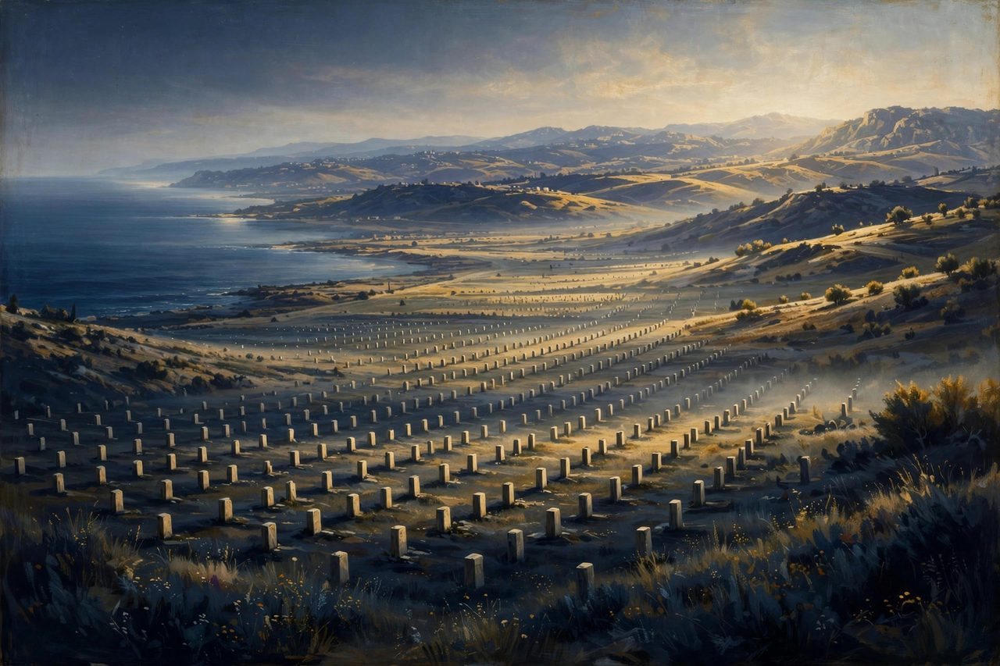
Scripture: Ezekiel 39:11–16 The story: After God's great victory over Gog and his invading horde, Ezekiel describes the aftermath: God gives Gog a burial place in a valley east of the Dead Sea, and renames it the Valley of Hamon-gog — "the valley of the multitude of Gog." For seven months the house of Israel buries the dead to cleanse the land; men are employed full-time for the work, and travelers mark any bone they find so the buriers can finish the job. The valley that was to be Gog's highway of conquest becomes his graveyard. The meaning: Hamon-gog teaches that God's victory over evil is not cosmetic — He cleans the land afterward, bone by bone, until the place of invasion is a place of rest. The enemy who came as a multitude is remembered only as a multitude buried. What it points to: The valley points forward to the final defeat of evil in Revelation, where Gog and Magog rise one last time and fire falls (Rev 20:7–10), and to the promise that God's cleansing of creation is thorough — not a stone, not a bone, left out of place. For the human race, it means the story does not end with evil roaming free; it ends with evil buried and the land at peace.The Valley of Jehoshaphat (the Valley of Decision)
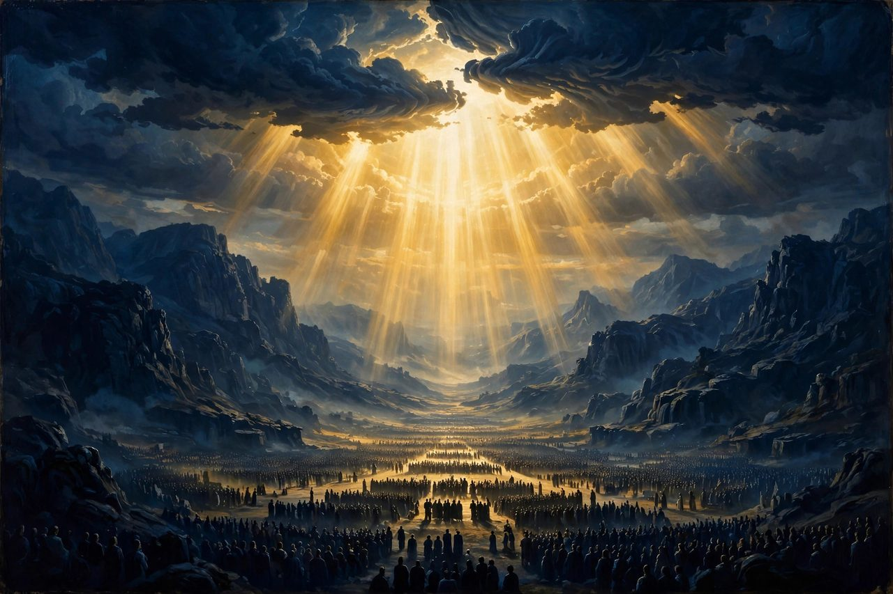
Scripture: Joel 3:2, 12, 14 The story: Joel closes his prophecy with a courtroom scene set in a valley: "I will gather all the nations and bring them down to the Valley of Jehoshaphat. And I will enter into judgment with them there," God says — for scattering His people, dividing His land, and selling His children. The nations are summoned: "Let the nations stir themselves up and come up to the Valley of Jehoshaphat; for there I will sit to judge all the surrounding nations." Then verse 14 gives the valley its other name: "Multitudes, multitudes, in the valley of decision! For the day of the LORD is near in the valley of decision." The valley's exact earthly location is debated — Jehoshaphat means "the LORD judges," and the name may be prophetic rather than a map reference — but its role in the prophecy is unmistakable. The meaning: This valley teaches that history is not drifting; it is heading for a judgment, and the Judge is God Himself. The name Jehoshaphat flips the memory of 2 Chronicles 20: there, a king named Jehoshaphat watched God fight for him; here, God sits down in the valley to settle the accounts of the nations. What it points to: The Valley of Decision points to the final judgment — the day every human being's treatment of God and His people is weighed — and it presses the question on every reader now: multitudes stand in a valley of decision today, and the decision that matters is what they have done with the Son while decision was still possible.The Valley of Acacias (the Valley of Shittim)
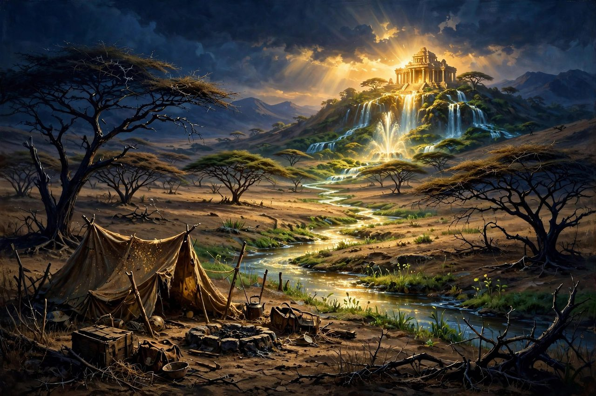
Scripture: Joel 3:18; Numbers 25:1; Micah 6:5 The story: Shittim — also called Abel-shittim, "meadow of the acacias" — was Israel's last campsite east of the Jordan before crossing into the Promised Land, and it holds both Israel's shame and God's promise. There, at Baal-peor, Israel was seduced into idolatry and immorality and a plague killed 24,000 (Num 25). Micah later pleads with Israel to remember the journey "from Shittim to Gilgal" — from that very place of sin — "that you may know the righteous acts of the LORD" (Mic 6:5). And Joel ends his book with this valley: on the day of God's restoration, "a fountain shall come forth from the house of the LORD and water the Valley of Shittim" (Joel 3:18). The meaning: Shittim teaches that God remembers the whole journey — the sin at the campsite and the grace that carried the people through it anyway — and that His final word over a place of failure is a fountain. The driest valley in Israel's memory gets watered from God's own house. What it points to: Shittim points to the river of the water of life that flows from God's throne in the new creation (Rev 22:1–2), healing everything it touches. For the human race it says that the site of your worst compromise is not beyond irrigation: the fountain reaches all the way to the valley of acacias.The Valley of Lebanon
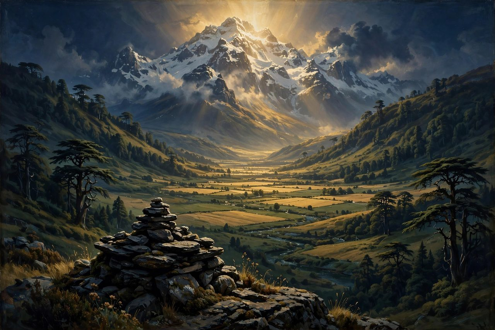
Scripture: Joshua 11:17; 12:7 The story: When Joshua's conquests are summarized, the northern edge of the victory is marked by "the Valley of Lebanon below Mount Hermon," at the place called Baal-gad. It was the far boundary of the land the LORD gave Israel to possess — the end of the campaign that began at Jericho. Lebanon's valley, beneath the great snow-capped mountain, stood as the northern monument of what God had done. The meaning: This quiet boundary valley teaches that God's promises have edges He Himself sets, and that reaching them is itself a testimony. The chronicler does not linger here — he simply records that the inheritance stretched this far, because God had said it would. What it points to: The Valley of Lebanon points to the completeness of God's inheritance for His people — nothing of the promise left unconquered on the far edge — and forward to the day when the redeemed look back over the whole territory of their salvation and find that God kept every boundary line He drew.The Valley of Zephathah
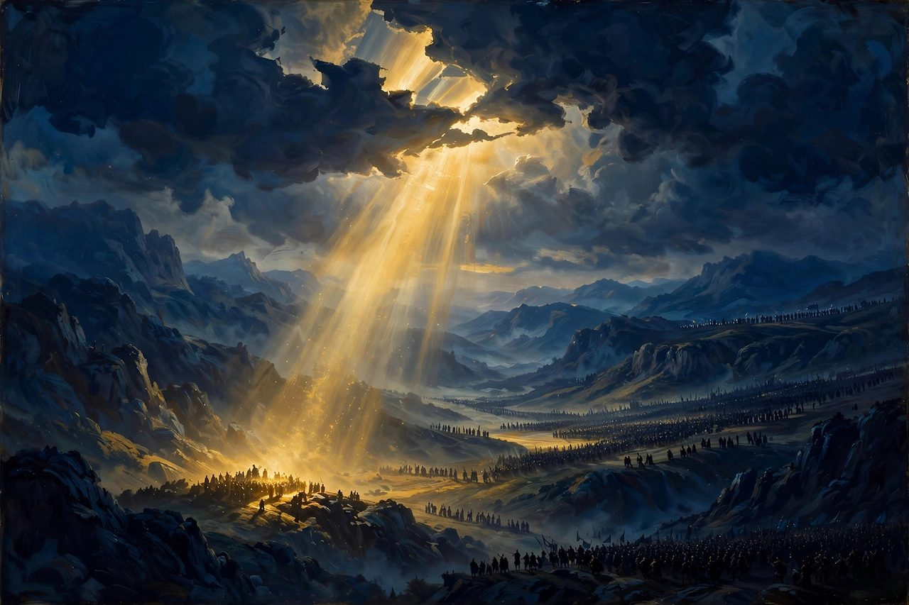
Scripture: 2 Chronicles 14:9–15 The story: King Asa of Judah faced an invasion almost beyond imagining: Zerah the Ethiopian came against him with an army of a million men and 300 chariots, and the two forces set themselves in battle array in the Valley of Zephathah. Asa had barely half their number, so he did the arithmetic of faith and prayed one of the great outnumbered prayers of the Bible: "O LORD, there is none like you to help, between the mighty and the weak. Help us, O LORD our God, for we rely on you, and in your name we have come against this multitude" (2 Chr 14:11). And "the LORD defeated the Ethiopians before Asa." The meaning: Zephathah teaches that odds are not an argument against God — they are the stage for Him. Asa's prayer names the only two categories that matter: the mighty and the weak, and a God who helps between them regardless of which side of the line you are on. What it points to: This valley speaks directly to the outnumbered human condition — the diagnosis, the debt, the habit, the enemy that outnumbers your strength five to one. It points to a Savior who invites the weak specifically, and whose power is made perfect not in our surplus but in our shortage.The Valley of the Craftsmen (Ge-harashim)
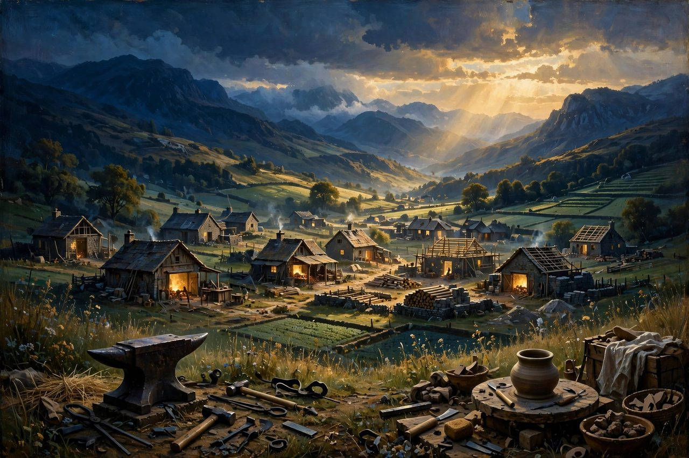
Scripture: Nehemiah 11:35; 1 Chronicles 4:14 The story: After the exile, when God's people resettled the land around Jerusalem, Nehemiah's record lists the towns and valleys where families put down roots again — and among them is Ge-harashim, the Valley of the Craftsmen, named generations earlier for Joab son of Seraiah, remembered simply as "the father of the valley of craftsmen, for they were craftsmen" (1 Chr 4:14). No battle happened here, no prophet thundered here. Working people with tools in their hands rebuilt their lives here, and God wrote the valley — and the craftsman — into His book by name. The meaning: This valley teaches that God sanctifies ordinary work. Not every valley in your life is a battlefield or a graveyard; some are workshops, and the people faithfully swinging hammers in them are as much a part of God's story as kings and prophets. What it points to: Ge-harashim points to the dignity of every unnoticed believer — the ones who will never preach or lead but whose faithfulness rebuilds a community after ruin. It points forward to a new creation built by a Carpenter-King who was Himself counted among the craftsmen of an ordinary town.The Valley of Succoth
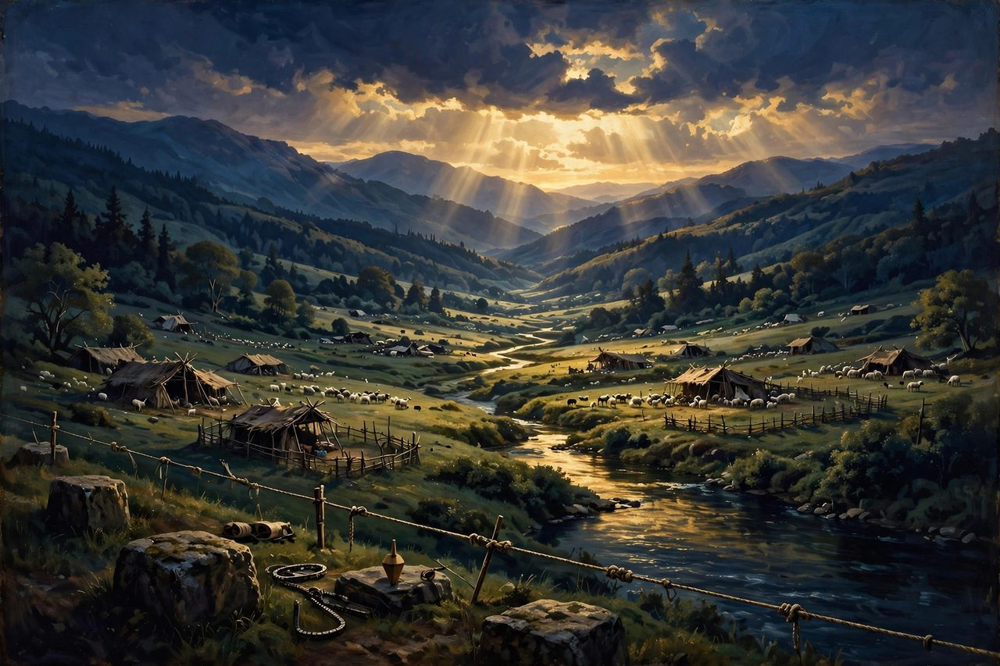
Scripture: Psalm 60:6; Genesis 33:17 The story: Succoth — "booths" — was where Jacob, finally home and reconciled with Esau, built shelters for his household and his livestock, and the town in the Jordan Valley kept the name. Generations later, in Psalm 60, God speaks over the map of Israel like a King dividing His own estate: "With exultation I will divide up Shechem and portion out the Vale of Succoth." Succoth is listed among the territories God Himself measures out and claims as His. The meaning: Succoth teaches that the temporary shelters of a pilgrim's life fall inside God's geography. Jacob's booths were makeshift and short-lived, but God counts the ground under them as His portioned inheritance — no stop along the journey is beneath His notice or outside His claim. What it points to: Succoth points to the people of God as they actually live: housed in booths for now, on the way to a city with foundations. It points forward to the Feast of Booths' fulfillment — God tabernacling with His people forever (Rev 21:3) — and it comforts anyone living in a temporary arrangement: God has portioned out even this ground.The Jordan Valley
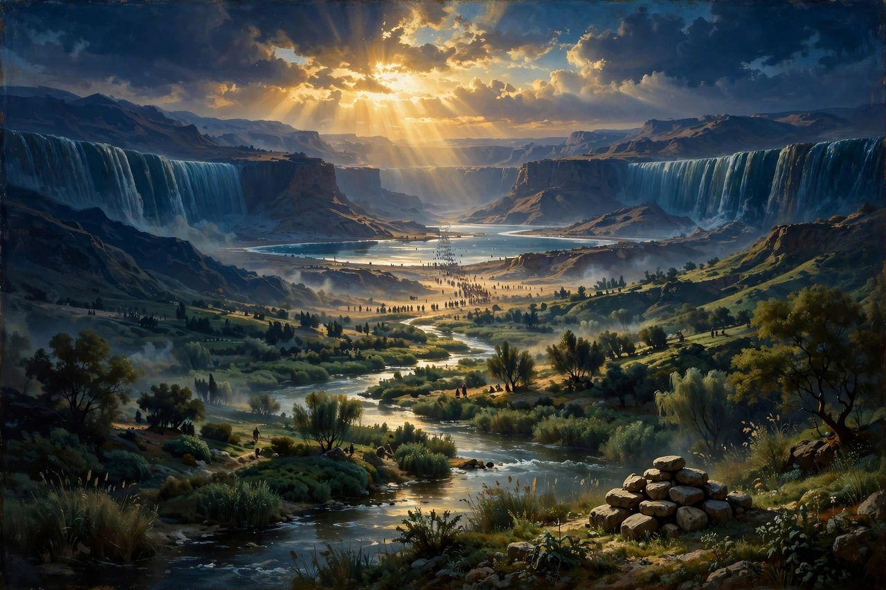
Scripture: Genesis 13:10–12; Deuteronomy 34:3; Joshua 3–4 The story: The Jordan Valley — the lowest valley on the face of the earth, running down to the Dead Sea — is where the Bible's great choices and crossings happen. Abram gave his nephew Lot first pick of the land, and Lot "lifted up his eyes and saw that the Jordan Valley was well watered everywhere like the garden of the LORD" (Gen 13:10) — and chose it, pitching his tents ever closer to Sodom, though the men of Sodom "were wicked, great sinners against the LORD." Generations later, Moses viewed this same valley from Mount Nebo, the whole plain of the Jordan spread before him, just before he died. And then Joshua led Israel to the flooded Jordan itself, where the waters piled up and stopped, and a nation crossed on dry ground into the inheritance — marking the spot with twelve stones so their children would ask, "What do these stones mean?" The meaning: The Jordan Valley teaches that the same low ground can be a temptation or a threshold, depending on who is choosing and why. Lot chose the valley for its water and it carried him toward ruin; Israel crossed through it at God's command and it carried them home. The difference was never the valley — it was the voice being followed into it. What it points to: The Jordan points to every crossing in the human story: the boundary between wandering and promise, and finally between this life and the next, which is why the old hymns call death itself "crossing Jordan." It points to the One who would one day step into this valley's river to be baptized — God's own Son taking the low road His people could not — and to the promise that the valley which swallowed Lot's future becomes, for God's people, the doorway in.← Previous part · Series index · Next part →
The Hope Connection
Meeting others where they are in the Name of Jesus — testimony and teaching on the hope that holds.